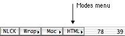

Copyright 1996-2003 byJohan Linde
http://go.to/alpha_www_tools
<jlinde@hem.utfors.se> (try this
first)
<alpha_www_tools@go.to>
July 2003
This manual describes three of Alpha's many modes, HTML, CSS, and JavaScript modes.
HTML mode is for editing HyperText Markup Language (HTML) documents and Extensible HyperText Markup Language (XHTML) documents (suffix .html, .htm or .shtml). Whenever you open or save a file with a name with any of these suffixes, Alpha switches to HTML mode and inserts three menus in the menu bar. The first one is called the CSS menu and contains functions for editing Cascading Style Sheets (CSS). The second one is called the HTML menu and the last one the HTML Utilities menu. 
You can always manually switch to HTML mode with the popup mode menu in the status bar in the lower right corner of your screen, see the picture to the right. Alpha has many different modes giving you different features depending on which type of document you are editing. When you edit HTML documents, make sure you are using HTML mode.
The basic idea with this HTML environment is to save you time while typing, by providing powerful tools for editing HTML code. HTML mode can help you to learn HTML, but it requires that you have some basic knowledge of HTML to be useful. However, you don't have to be an HTML expert and know every single element and every single attribute.
This manual is only a manual for Alpha's HTML, JavaScript, and CSS modes. It does not describe any of the many other modes Alpha has, and not any of Alpha's many other features. They are documented elsewhere. You can open many different help files under the system help menu. If you haven't used Alpha at all before I recommend that you at least read the Quick Start before reading this manual.
In HTML mode there is support for editing of both JavaScript and CSS within HTML documents. There are also a separate JavaScript mode for editing JavaScript documents (suffix .js) and a CSS mode for editing CSS documents (suffix .css). When Alpha switches to CSS mode it inserts the CSS menu in the menu bar. JavaScript mode does not have its own menu.
Note that within HTML mode the coloring of JavaScript and CSS keywords is not enabled by default. This is because it's more convenient to have it disabled if you are not using JavaScript or CSS. Read the Coloring section of this manual to see what to do to enable coloring of JavaScript and CSS keywords.
First of all, I would like to thank Pete Keleher for writing Alpha, the best editor in the world, without which my Tcl code would be pretty useless. Many thanks to all other Alpha Tcl authors, in particular Vince Darley, who is currently leading the development of Alpha's core Tcl features. I am also indebted to Scott Brim who wrote the first version of Alpha's HTML mode. Some original ideas and tcl code were taken by him from html.el for GNU Emacs and latex.tcl for Alpha. François Pottier gave me lots of help with the code which makes Alpha talk to Big Brother. The algorithm for extracting the width and height of JPEG images were written by Alex Knowles and Andrew Tong. Many thanks to Michael O'Henly for making the wonderful Alpha HTML mode intro site. He has also sent me a list with corrections of the language in an earlier version of this manual. (But his correction are gone by now as the manual is completely rewritten. :-) And thanks to everybody who has sent me suggestions and bug reports. You know who you are.
All comments on HTML mode are welcome. Many features in HTML mode were suggested by HTML mode users. Don't hesitate to send me your ideas. Please tell me if you find a bug which annoys you. If you tell me about it I'll do my best to fix it. If you don't tell me about it I may not discover it myself.
All Tcl code I've written for Alpha is distributed under the GNU public licence.
This program is free software; you can redistribute it and/or modify it under the terms of the GNU General Public License as published by the Free Software Foundation; either version 2 of the License, or (at your option) any later version.
This program is distributed in the hope that it will be useful, but WITHOUT ANY WARRANTY; without even the implied warranty of MERCHANTABILITY or FITNESS FOR A PARTICULAR PURPOSE. See the GNU General Public License for more details.
You should have received a copy of the GNU General Public License along with this program; if not, write to the Free Software Foundation, Inc., 675 Mass Ave, Cambridge, MA 02139, USA.
However, Alpha itself is not free. It's shareware.
Writing HTML mode has taken a considerable amount of time. Therefore, if you like HTML mode and use it a lot, I would very much appreciate it if you send me a colorful postcard and tell me that. It would give me new energy to add new features to HTML mode. Note that emails don't count as postcards. Emails are not pretty enough to put on the wall. My address is
Johan Linde
Näckrosvägen 27
SE-169 37 SOLNA
SWEDEN
My mother tongue is Swedish. Therefore you will, no doubt, find grammatical and other errors in this manual and in HTML mode.
But before you complain, I must tell you that I know that "color" is spelt "colour". :-)